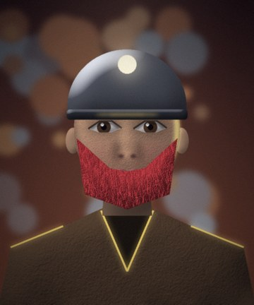
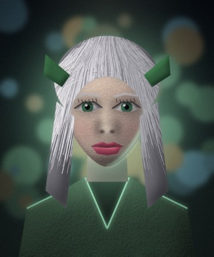
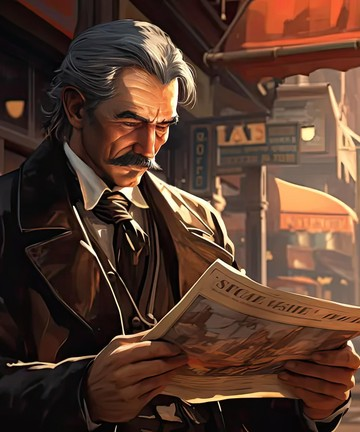

Take contracts at the Adventurers' Guild board (board), talk to a giver (talk <name>), accept a quest, and turn it in by talking to the giver again. Quest points (QP) are awarded once per quest. The quest window shows your accepted contracts.
The NPCs
Fixer Torv
A scarred veteran who runs the Adventurers' Guild and knows every job in Ashfall. Type `board` to see open quests.
Adventurers' Guild Ashfall Junction
First Steps · Goblin Menace · Scout the Marsh · Scout the Dunes · Scout Frostpeak · Into the Dark · Welcome to the Multiverse
Doc Elara
A gentle priestess in white. She tends the temple and hates the walking dead.
Temple of the Dawn Ashfall Junction
The Restless Dead · Warlord of the Crypt
Brann the Smith
A broad man with forearms like logs.
Brann's Smithy Ashfall Junction
Mara the Innkeeper
Mara runs the Silver Spur Saloon with an iron hand and a soft heart.
Silver Spur Saloon Ashfall Junction
Herbs for the Inn
Captain Hale
The weary captain of Ashfall's gate guard.
North Gate Ashfall Junction
Rat Trouble · Wolves at the Stream
Old Pell
A cheerful apothecary with stained fingers.
Market Row Ashfall Junction
Pell's Fish Pie
Old Fenwick
A hermit herbalist with moss in his beard.
Hermit's Clearing Whisperwood
Fenwick's Herbs · Thicket Goblins
Brother Aldous
A thin, pale priest who guards the crypt's last quiet corner.
Reliquary Barrow Crypts
Bones and Dust · Ghoul Hunt
Old Barnaby
A fisherman who has lived on a wrecked boat for thirty years.
Sunken Boat Sunken Marsh
Leech Plague · Catch of the Day · The Hag's Bargain · Hydra Hunter
Greta of the Inn
A tough woman who refuses to abandon her family's inn.
Rattlesnake Saloon Redrock Trail
Clear the Road · Highway Justice · Captain's Bounty

Foreman Durn
A stout dwarf with a soot-black beard.
Lucky Strike Saloon Silverado Mines
Spiders in the Dark · Ore for the Forge · Stone Giants · The King Below
Sheikh Rashid
The dignified leader of a nomad band.
Nomad Camp Sunscorch Dunes
Scorpion Stingers · Wraith Whispers · The Sleeping King
Hermit Ulf
A bearded hermit wrapped in furs.
Hermit's Habitat Frostpeak Station
Wolf Pack · Yeti Fur · Giant's Fall
Pyromancer Sael
A soot-streaked mage who studies the Wastes.
Scorched Camp Ember Wastes
Imp Infestation · Magma Cores · Titan Down
Sergeant Voss
The last living soldier of the Citadel garrison.
Guard Post Shattered Citadel
Cursed Armor · Gargoyle Cull · The Dread Marshal
The Watcher
A figure of drifting light that watches the Void.
Dream Fragment The Abyss
Void Stalkers · End of Everything
Shift Supervisor Sam
A cheerful shift supervisor in a green apron with a name tag, a pen behind each ear and bags under both eyes.
Buckstars Entrance Buckstars Coffee Shop
Closing Shift
Barista Bree
A friendly barista with a marker in her hair, drawing a name on a cup and a heart on the foam.
Order Counter Buckstars Coffee Shop
Engineer Dex
A tall engineer in a grease-stained lab coat, goggles pushed up on his forehead, elbow-deep in a patient's neural port and humming a tune. He cannot be disturbed, and he will not be killed.
Neural Implant Lab Ashfall Junction
Elder Ugga
A tiny, ancient cave elder in a patchwork fur cloak, with ochre handprints on her face, a bone staff and a look that has seen ten thousand winters.
Cave Mouth The Mammoth Caverns
Bear Trouble · Mammoth Hunt · The Great Chieftain
Dana Whitfield
A harried building manager in a headset and a lanyard with a clipboard, a flashlight and the thousand-yard stare of someone who has read the fire-safety manual.
Meridian Tower Plaza Modern District
Night Shift · Corporate Ladder · Hostile Takeover
Dr. Mara Quill
A sunburned paleontologist in a battered hat with a field notebook, a tranquilizer rifle she is bad with and a delighted, slightly unhinged smile.
Portal Landing The Primeval Rift
Raptor Cull · Horn and Hide · Tyrant of the Rift
Father Aldric
A gaunt hunter-priest in a patched black coat, silver stakes at his belt, with tired, steady eyes that have seen everything the Hollow can do.
Hunters' Chapel Nightfall Hollow
Thin the Thralls · Silver Moon · Burn the Coven · The Count · Malphas
Dale the Attendant
A tired gas station attendant in a faded vest, with a name tag, a mop and a lifetime of stories.
QuikStop Gas: Convenience Store Modern District
Coupon Collector
Wanda the Park Manager
A sharp-eyed trailer park manager with reading glasses on a chain, a clipboard and a flyswatter she has used as a weapon.
Sunset Acres: Park Office Modern District
Park Pests · The Landlord
Mall Cop Gary
A mall security guard in a too-small uniform, a flashlight on his belt, who takes his job a little too seriously.
Multi-Mart: Customer Service Modern District
Cart Roundup · Black Friday Doug
Slick Sam
A grinning, well-dressed fixer with a scarred cheek, who always sits with his back to the wall. He plans jobs, and takes a cut.
Rattlesnake Saloon Redrock Trail
Bank Robbery
Sheriff Whitlock
The last lawman of the Gulch, a grizzled sheriff with a tin star and tired eyes. He still posts wanted notices for people who died fifty years ago.
Sheriff's Office Tombstone Gulch
Badges for the Sheriff · Quiet Boot Hill · Ghost Marshal Dalton

Warden Sylwen
A tall fey warden with silver hair and a cloak of living leaves. She is polite, ancient and never quite blinks.
Moonwell Thornwild Court
Dust for the Warden · Pixie Problems · The Thorn Queen
Lt. Okoro
The last officer of the Aurora, her uniform patched with salvage and her left arm a bright chrome prosthetic.
Galley Starship Aurora
Black Box Data · Silence the Drones · Helix, the Ship's Mind
Captain Isolde Marrow
The ghost of a drowned ship captain, still clutching her spyglass. Water drips from her coat and never stops.
Tidal Chapel The Drowned Reach
Black Pearls · Salvage the Wrecks · Leviathan of the Reach

Stationmaster Cobb
A weary stationmaster in a soot-black waistcoat, with a pocketwatch that runs backwards and a ledger of every soul that boarded.
Stationmaster's Office Brimstone Rail Yard
Golden Spikes · Keep the Trains Running · The Brimstone Express
All contracts
Contract XP grows with the contract's level: about one level's worth of XP at that level, times 2.5 for boss contracts, 1 for kill contracts, 0.7 for fetch contracts, 0.5 for visit and talk contracts, plus 25% for follow-ups. Each remort adds 10%. Quest points are separate and awarded once per contract.
| Quest | Giver | Min level | Requirements | Reward | Quest points | Needs first |
|---|---|---|---|---|---|---|
| First Steps | Fixer Torv | 1 | Talk to Doc Elara | 25 XP, 20c | 1 | - |
| Rat Trouble | Captain Hale | 1 | Kill giant rat x4 | 63 XP, 40c, red stim | 1 | First Steps |
| Herbs for the Inn | Mara the Innkeeper | 1 | Bring wild herb x3 | 35 XP, 30c, herbal medkit | 1 | - |
| Pell's Fish Pie | Old Pell | 3 | Bring river trout x2 | 175 XP, 70c, blue cell, blue cell | 1 | - |
| Goblin Menace | Fixer Torv | 3 | Kill goblin x5 | 313 XP, 100c | 1 | Rat Trouble |
| Wolves at the Stream | Captain Hale | 5 | Kill dire wolf x4 | 563 XP, 160c, scrap blade | 2 | Goblin Menace |
| The Restless Dead | Doc Elara | 6 | Kill skeleton x5 | 688 XP, 220c | 2 | Wolves at the Stream |
| Warlord of the Crypt | Doc Elara | 8 | Kill skeleton warlord x1 | 2,344 XP, 600c, carbon vest | 5 | The Restless Dead |
| Scout the Marsh | Fixer Torv | 8 | Visit Hag's Hut | 375 XP, 250c | 2 | - |
| Scout the Dunes | Fixer Torv | 18 | Visit Sunken Ruins | 875 XP, 800c | 5 | - |
| Scout Frostpeak | Fixer Torv | 24 | Visit The Cryo Titan's Hall | 1,175 XP, 1,500c | 6 | - |
| Into the Dark | Fixer Torv | 36 | Visit The Black Stair | 1,775 XP, 4,000c | 9 | - |
| Fenwick's Herbs | Old Fenwick | 2 | Bring wild herb x5 | 105 XP, 50c | 1 | - |
| Thicket Goblins | Old Fenwick | 4 | Kill goblin x6 | 438 XP, 120c | 1 | Fenwick's Herbs |
| Bones and Dust | Brother Aldous | 4 | Kill skeleton x6 | 350 XP, 140c | 1 | - |
| Ghoul Hunt | Brother Aldous | 6 | Kill ghoul x4 | 688 XP, 280c, strong stim | 2 | Bones and Dust |
| Leech Plague | Old Barnaby | 8 | Kill giant leech x6 | 750 XP, 300c | 2 | - |
| Catch of the Day | Old Barnaby | 8 | Bring river trout x4 | 525 XP, 250c | 2 | - |
| The Hag's Bargain | Old Barnaby | 10 | Kill marsh hag x1 | 1,188 XP, 500c | 3 | Leech Plague |
| Hydra Hunter | Old Barnaby | 12 | Kill swamp hydra x1 | 3,594 XP, 1,000c, carbon riot shield | 5 | The Hag's Bargain |
| Clear the Road | Greta of the Inn | 12 | Kill outlaw x6 | 1,150 XP, 450c | 3 | - |
| Highway Justice | Greta of the Inn | 14 | Kill stagecoach robber x5 | 1,688 XP, 700c | 4 | Clear the Road |
| Captain's Bounty | Greta of the Inn | 16 | Kill Red Jack Calloway x1 | 4,844 XP, 1,500c, nano-weave helmet | 6 | Highway Justice |
| Spiders in the Dark | Foreman Durn | 12 | Kill cave spider x6 | 1,150 XP, 400c | 3 | - |
| Ore for the Forge | Foreman Durn | 12 | Bring iron ore x6 | 805 XP, 350c | 3 | - |
| Stone Giants | Foreman Durn | 15 | Kill rock golem x3 | 1,813 XP, 900c | 4 | Spiders in the Dark |
| The King Below | Foreman Durn | 17 | Kill Delver King x1 | 5,156 XP, 2,000c, nano-weave vest | 7 | Stone Giants |
| Scorpion Stingers | Sheikh Rashid | 18 | Kill giant scorpion x6 | 1,750 XP, 1,200c | 5 | - |
| Wraith Whispers | Sheikh Rashid | 20 | Kill sand wraith x5 | 2,438 XP, 1,600c | 5 | Scorpion Stingers |
| The Sleeping King | Sheikh Rashid | 24 | Kill undying pharaoh x1 | 7,344 XP, 4,000c, runed blade | 10 | Wraith Whispers |
| Wolf Pack | Hermit Ulf | 24 | Kill cryo-wolf x6 | 2,350 XP, 2,200c | 6 | - |
| Yeti Fur | Hermit Ulf | 26 | Kill mutant yeti x4 | 3,188 XP, 3,000c | 7 | Wolf Pack |
| Giant's Fall | Hermit Ulf | 29 | Kill Cryo Titan x1 | 8,906 XP, 6,000c, smartsteel blade | 12 | Yeti Fur |
| Imp Infestation | Pyromancer Sael | 30 | Kill plasma imp x8 | 2,950 XP, 4,000c | 8 | - |
| Magma Cores | Pyromancer Sael | 32 | Kill magma elemental x4 | 3,938 XP, 5,000c | 8 | Imp Infestation |
| Titan Down | Pyromancer Sael | 33 | Kill Magma Titan x1 | 10,156 XP, 9,000c, dragonscale vest | 14 | Magma Cores |
| Cursed Armor | Sergeant Voss | 35 | Kill cursed knight x8 | 3,450 XP, 8,000c | 9 | - |
| Gargoyle Cull | Sergeant Voss | 36 | Kill gargoyle x6 | 4,438 XP, 9,000c | 9 | Cursed Armor |
| The Dread Marshal | Sergeant Voss | 38 | Kill Dread Marshal x1 | 11,719 XP, 20,000c, dragonscale blade | 16 | Gargoyle Cull |
| Void Stalkers | The Watcher | 39 | Kill void stalker x8 | 3,850 XP, 15,000c | 10 | - |
| End of Everything | The Watcher | 40 | Kill the Voidlord x1 | 12,344 XP, 50,000c, revive kit, revive kit, revive kit | 25 | Void Stalkers |
| Welcome to the Multiverse | Fixer Torv | 1 | Finish the newbie tutorial | 150 XP, 200c, red stim, red stim | 3 | - |
| Closing Shift | Shift Supervisor Sam | 1 | Kill Overcaffeinated Brenda, Store Manager x1 | 125 XP, 120c, mocha frappe, bacon gouda sandwich, red stim | 2 | - |
| Bear Trouble | Elder Ugga | 26 | Kill cave bear x4 | 2,550 XP, 6,000c, mammoth steak, military stim | 7 | - |
| Mammoth Hunt | Elder Ugga | 29 | Kill woolly mammoth x2 | 2,850 XP, 9,000c, mammoth steak, mammoth steak, military stim | 8 | - |
| The Great Chieftain | Elder Ugga | 31 | Kill Grog the Great x1 | 9,531 XP, 25,000c, military stim, military stim, trauma kit | 6 | Mammoth Hunt |
| Night Shift | Dana Whitfield | 17 | Kill night janitor x4 | 1,650 XP, 3,000c, double espresso, break-room donut, first aid kit | 5 | - |
| Corporate Ladder | Dana Whitfield | 26 | Kill vice president of sales x2 | 2,550 XP, 9,000c, executive lunch box, executive lunch box, military stim | 7 | - |
| Hostile Takeover | Dana Whitfield | 30 | Kill Reginald P. Moneybags III, CEO x1 | 9,219 XP, 30,000c, military stim, trauma kit, executive lunch box, executive lunch box | 6 | Corporate Ladder |
| Raptor Cull | Dr. Mara Quill | 21 | Kill velociraptor x6 | 2,050 XP, 1,200c, dino jerky, strong stim | 6 | - |
| Horn and Hide | Dr. Mara Quill | 23 | Kill triceratops x3 | 2,250 XP, 1,800c, military stim, first aid kit | 6 | - |
| Tyrant of the Rift | Dr. Mara Quill | 26 | Kill Rex the Tyrant x1 | 7,969 XP, 5,000c, military stim, military stim, chunk of amber | 5 | Horn and Hide |
| Thin the Thralls | Father Aldric | 33 | Kill vampire thrall x6 | 3,250 XP, 3,500c, vial of holy water, strong stim | 9 | - |
| Silver Moon | Father Aldric | 34 | Kill werewolf x6 | 3,350 XP, 4,000c, vial of holy water, military stim | 9 | - |
| Burn the Coven | Father Aldric | 34 | Kill hedge witch x4; Kill coven witch x2 | 3,350 XP, 4,500c, vial of holy water, cobalt cell | 9 | - |
| The Count | Father Aldric | 36 | Kill Count Vladislav Morrow x1 | 11,094 XP, 8,000c, vial of holy water, vial of holy water, military stim | 5 | Thin the Thralls |
| Malphas | Father Aldric | 38 | Kill Malphas the Archdemon x1 | 11,719 XP, 12,000c, vial of holy water, vial of holy water, military stim, cobalt cell | 6 | The Count |
| Coupon Collector | Dale the Attendant | 10 | Bring crumpled coupon x3 | 665 XP, 350c, hamburger, can of cola | 3 | - |
| Park Pests | Wanda the Park Manager | 11 | Kill dumpster raccoon x6 | 1,050 XP, 500c, first aid kit, hot dog | 3 | - |
| The Landlord | Wanda the Park Manager | 14 | Kill Landlord Earl Boudreaux x1 | 4,219 XP, 1,500c, strong stim, strong stim, first aid kit | 5 | Park Pests |
| Cart Roundup | Mall Cop Gary | 12 | Kill possessed shopping cart x6 | 1,150 XP, 600c, energy drink, first aid kit | 3 | - |
| Black Friday Doug | Mall Cop Gary | 15 | Kill Store Manager Doug Pruitt x1 | 4,531 XP, 1,800c, military stim, azure cell, first aid kit | 5 | Cart Roundup |
| Bank Robbery | Slick Sam | 15 | Rob 3 people at the bank (rob <person>); Kill Bank Manager Ebenezer Crane x1; Unlock and loot the bank vault | 3,625 XP, 1,500c, trauma kit | 6 | - |
| Badges for the Sheriff | Sheriff Whitlock | 10 | Bring tarnished ghost badge x3 | 665 XP, 300c, strong stim | 3 | - |
| Quiet Boot Hill | Sheriff Whitlock | 11 | Kill ghost outlaw x6 | 1,050 XP, 450c, strong stim, strong stim | 3 | - |
| Ghost Marshal Dalton | Sheriff Whitlock | 13 | Kill Ghost Marshal Dalton x1 | 3,906 XP, 1,200c, military stim, azure cell | 4 | Quiet Boot Hill |
| Dust for the Warden | Warden Sylwen | 15 | Bring pouch of fae dust x3 | 1,015 XP, 450c, military stim | 4 | - |
| Pixie Problems | Warden Sylwen | 16 | Kill pixie thief x6 | 1,550 XP, 650c, military stim, azure cell | 4 | - |
| The Thorn Queen | Warden Sylwen | 18 | Kill Thorn Queen Mab x1 | 5,469 XP, 1,800c, military stim, military stim, azure cell | 5 | Pixie Problems |
| Black Box Data | Lt. Okoro | 22 | Bring encrypted data chip x3 | 1,505 XP, 800c, military stim | 6 | - |
| Silence the Drones | Lt. Okoro | 23 | Kill security drone x6 | 2,250 XP, 1,100c, military stim, azure cell | 6 | - |
| Helix, the Ship's Mind | Lt. Okoro | 25 | Kill Helix, the Ship's Mind x1 | 7,656 XP, 3,000c, trauma kit, cobalt cell | 6 | Silence the Drones |
| Black Pearls | Captain Isolde Marrow | 27 | Bring black pearl x3 | 1,855 XP, 1,200c, military stim | 7 | - |
| Salvage the Wrecks | Captain Isolde Marrow | 28 | Kill drowned sailor x7 | 2,750 XP, 1,600c, military stim, cobalt cell | 7 | - |
| Leviathan of the Reach | Captain Isolde Marrow | 30 | Kill Leviathan of the Reach x1 | 9,219 XP, 4,400c, trauma kit, trauma kit | 7 | Salvage the Wrecks |
| Golden Spikes | Stationmaster Cobb | 32 | Bring cursed golden spike x3 | 2,205 XP, 1,800c, trauma kit | 8 | - |
| Keep the Trains Running | Stationmaster Cobb | 33 | Kill cinder brakeman x6 | 3,250 XP, 2,400c, trauma kit, cobalt cell | 9 | - |
| The Brimstone Express | Stationmaster Cobb | 35 | Kill The Brimstone Express x1 | 10,781 XP, 7,000c, revive kit, sapphire cell | 8 | Keep the Trains Running |
All 78 quests together are worth 438 quest points.